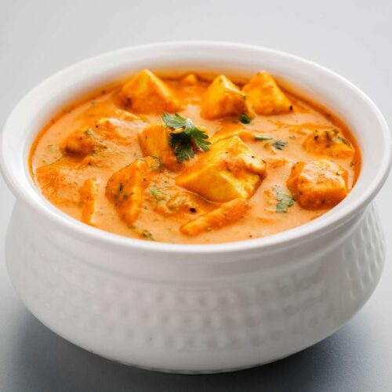

Shahi Paneer is a rich and creamy North Indian curry made with soft paneer cubes cooked in a luxurious gravy of tomatoes, cream, and aromatic spices. Known for its royal Mughlai origins, it delivers a mildly sweet and nutty flavor profile.
My first attempt at shahi paneer taught me that balance is everything. I added too many spices, overpowering the delicate creaminess. Over time, I learned that subtlety is key—letting the cashew paste and cream shine while keeping the spices gentle. Cooking it slowly helped the flavors blend beautifully.
This dish is perfect for special occasions and pairs wonderfully with naan, roti, or jeera rice. Its rich taste makes it a favorite vegetarian delight across India.

Preparation Time: 40 minutes
Difficulty: Medium
Servings: 3
Category: Vegetarian